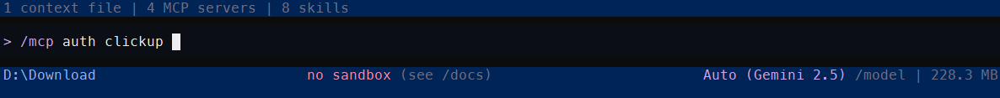

Gemini CLI¶
Esta guía detalla las características exclusivas de Gemini CLI en cuanto a la gestión de contexto, habilidades, automatización y más.
Gestión de Contexto (Memory Management)¶
Jerarquía de Archivos¶
Opera desde un nivel Global hacia el Proyecto y finalmente al Subdirectorio, usando GEMINI.md y AGENTS.md.
Sistema de Memoria Global¶
Permite modularización total escaneando recursivamente el árbol. La memoria global se gestiona con save_memory (ej. /memory show, /memory reload), persistiendo datos sin edición manual.
Estructura de Directorios¶
~/.gemini/GEMINI.md (Global)
mi-proyecto/
├── AGENTS.md (Proyecto)
└── src/
└── auth/
└── AGENTS.md (Subdirectorio)
Checkpointing (Puntos de Restauración)¶
A partir de la versión 0.11.0, la función de checkpointing automático está desactiva por defecto. Esta característica captura el estado completo de los archivos del proyecto y el historial de la conversación antes y después de cada llamada a herramientas.
Razón de Desactivación por Defecto¶
- Seguridad: Los checkpoints crean instantáneas locales del estado completo del repositorio y logs de conversación, lo que podría exponer datos sensibles.
- Almacenamiento: El uso de un repositorio "shadow" de Git para guardar estados puede aumentar drásticamente el espacio en disco en proyectos grandes.
- Rendimiento: El proceso de crear snapshots añade una latencia perceptible en cada interacción, especialmente cuando se barajan múltiples archivos.
Activación y Configuración¶
Los checkpoints se habilitan exclusivamente a través del archivo de configuración global o de proyecto.
Estructura de Directorio:
Ejemplo de Configuración (settings.json):
Comandos de Restauración¶
| Comando | Acción |
|---|---|
/restore --list |
Lista todos los checkpoints (IDs y timestamps) |
/restore <id> |
Revierte el estado de los archivos y la sesión al ID especificado |
Tipos de Checkpoints¶
- Automáticos: Se disparan antes y después de que el agente use herramientas de edición o terminal. Capturan el repositorio de Git, logs y el historial de sesión. Requiere
checkpointing.enabled: true. - Manuales (Tagging): Los usuarios pueden marcar puntos específicos de la sesión usando
/chat save <nombre>. Esto permite etiquetar hitos importantes independientemente de la ejecución de herramientas.
Notas sobre Alucinaciones y Seguridad¶
Tip
El checkpointing no aumenta las alucinaciones. Es una herramienta de seguridad del entorno. Se recomienda activarla cuando se delega autonomía al agente para editar múltiples archivos, ya que permite revertir errores o alucinaciones del modelo de forma instantánea sin perder el progreso del proyecto.
Fuente: Gemini CLI: Checkpointing
Skills (Habilidades)¶
Gemini CLI implementa el sistema de Skills con una jerarquía de tres niveles de descubrimiento: Workspace (.gemini/skills/), User (~/.gemini/skills/) y Extension (empaquetadas en una extensión instalada). Esto permite una composición flexible: las skills corporativas se distribuyen como extensiones, las preferencias personales se guardan en el nivel User, y los comportamientos específicos del repositorio viven en el Workspace.
Un aspecto crítico de seguridad exclusivo de Gemini CLI es el sandboxing obligatorio: antes de que el agente lea por primera vez los archivos internos de una skill (incluyendo scripts), el sistema solicita aprobación manual del usuario. Esta confirmación no se repite en sesiones posteriores para la misma skill, pero garantiza que ningún contenido malicioso inyectado en un repositorio externo pueda ejecutarse sin consentimiento explícito.
Gemini CLI también soporta skills con binarios empaquetados: el SKILL.md puede referenciar scripts ejecutables en NodeJS, Python o Shell que el agente invoca como herramientas sin exponerlos al modelo como texto.
Estructura de Directorio¶
~/.gemini/skills/
└── personal-style/
└── SKILL.md (Usuario — disponible en todos los proyectos)
mi-proyecto/
└── .gemini/
└── skills/
└── db-migration/ (Workspace — específico de este repositorio)
├── SKILL.md
└── scripts/
└── validate-schema.js
Ejemplo: Skill con Script Externo (SKILL.md)¶
---
name: db-migration
description: Validates and applies database migrations safely. Use when running Prisma migrations.
---
# Database Migration Helper
Before running any migration, always validate the schema first:
```bash
node {file:./scripts/validate-schema.js} --dry-run
Only proceed with prisma migrate deploy if the validation returns exit code 0.
Never run prisma migrate reset in production environments.
!!! tip
Referencia los scripts con `{file:./ruta}` en lugar de rutas absolutas. Esto hace las skills portables entre máquinas y garantiza que el agente resuelva la ruta relativa correctamente sin importar desde dónde se ejecute Gemini CLI.
*Fuentes: [Gemini CLI: Skills Getting Started](https://geminicli.com/docs/cli/tutorials/skills-getting-started/) | [Gemini CLI: Skills](https://geminicli.com/docs/cli/skills/)*
## MCP (Model Context Protocol)
### Protocolos y Transportes
Soporta `Stdio`, `SSE` (usando `url`) y `Streamable HTTP` (usando `httpUrl`). Implementa `Tools`, `Resources` y `Prompts` (slash commands).
Al configurar la conexión, el orden de precedencia (si se definen múltiples) es: `httpUrl` > `url` > `command`.
### Seguridad, Nombres y Sanitización
Censura automáticamente variables sensibles (`*TOKEN*`). Soporta `Service Account Impersonation` y asigna `Fully Qualified Names (FQN)` para evitar colisiones. Toda herramienta descubierta usa el formato `mcp_{alias}_{toolName}`.
!!! warning
Nunca utilices guiones bajos (`_`) en los alias de tus servidores MCP (usa `mi-servidor`, no `mi_servidor`). El Custom Policy Engine separa el FQN usando el primer guion bajo después del prefijo `mcp_`. Un `_` adicional romperá el parseo y las políticas fallarán silenciosamente.
### Opciones de Configuración por Servidor
Dentro de `mcpServers`, cada servidor acepta los siguientes campos:
- **Conexión Local (Stdio):** `command`, `args` (arreglo de argumentos), `cwd` (directorio de trabajo), y `env` (variables de entorno).
- **Conexión Remota:** `url` (SSE), `httpUrl` (HTTP Stream), `headers` (cabeceras HTTP) y `timeout` (milisegundos).
- **Seguridad:**
- `trust` (boolean): Confía plenamente en el servidor y omite los prompts de confirmación al ejecutar herramientas.
- **Filtro de Herramientas:**
- `includeTools` (array): Lista estricta de nombres de herramientas permitidas (allowlist). Solo se habilitarán estas.
- `excludeTools` (array): Lista de herramientas excluidas (denylist). **Tiene prioridad sobre `includeTools`**.
- **Metadatos:** `description` (breve resumen para visualización).
### Estructura de Directorio
```text
mi-proyecto/
└── .gemini/
└── settings.json
Inyección de Variables de Entorno¶
Los valores en la configuración pueden inyectar secretos usando $VAR_NAME, ${VAR_NAME}, o con defaults ${VAR_NAME:-default_value}.
Note
En entornos Windows, actualmente solo se soporta la sintaxis %VAR_NAME%.
Ejemplo de Configuración Avanzada (settings.json):
{
"mcpServers": {
"local-db": {
"command": "node",
"args": ["/path/to/server.js"],
"cwd": "./scripts/db",
"env": {
"DB_PASS": "${DATABASE_PASSWORD}",
"DB_HOST": "${DATABASE_HOST:-localhost}"
},
"trust": true,
"excludeTools": ["drop_table", "truncate_db"]
},
"remote-api": {
"httpUrl": "https://api.empresa.com/mcp",
"headers": {
"Authorization": "Bearer ${API_TOKEN}"
},
"timeout": 5000,
"includeTools": ["fetch_data"]
}
}
}

Fuentes: Gemini CLI: MCP Server Setup | Configuration Reference
Custom Commands¶
Los Custom Commands permiten guardar y reutilizar prompts frecuentes como atajos personales dentro de Gemini CLI. Se invocan con la sintaxis /nombre directamente en el chat.
Ubicaciones y Precedencia¶
Gemini CLI carga comandos desde dos ubicaciones en este orden: primero los globales del usuario, luego los del proyecto. Si un comando de proyecto tiene el mismo nombre que uno global, el de proyecto tiene prioridad.
Estructura de Directorios¶
~/.gemini/commands/ (Global — disponible en cualquier proyecto)
└── refactor/
└── pure.toml (invocado como /refactor:pure)
mi-proyecto/
└── .gemini/
└── commands/ (Proyecto — compartido con el equipo via git)
└── git/
└── commit.toml (invocado como /git:commit)
Tip
Los subdirectorios crean namespaces. El separador / o \ se convierte en :. Ejemplo: git/commit.toml → /git:commit. Tras modificar archivos .toml, ejecuta /commands reload para recargar sin reiniciar.
Formato TOML (v1)¶
Cada comando es un archivo .toml con dos campos: prompt (obligatorio) y description (opcional, se muestra en /help).
Ejemplo: Comando Básico (refactor/pure.toml)¶
# Invoked via: /refactor:pure
description = "Refactors the provided code into a pure function."
prompt = """
Please analyze the code in the current context.
Refactor it into a pure function. Your response must include:
1. The refactored function code block.
2. A brief explanation of the key changes made.
"""
Manejo de Argumentos¶
Los comandos soportan cuatro mecanismos de inyección dinámica:
{{args}} — Inyección de Argumentos del Usuario¶
Reemplaza el placeholder {{args}} con el texto escrito después del nombre del comando.
# Invoked via: /git:fix "Button is misaligned"
description = "Generates a fix for a given issue."
prompt = "Please provide a code fix for the issue described here: {{args}}."
Important
Cuando {{args}} se usa dentro de un bloque !{...} (shell), los argumentos son auto-escapados para prevenir inyección de comandos.
!{...} — Ejecución de Comandos Shell e Inyección de Output¶
Ejecuta un comando de shell y reemplaza el bloque con su output. El CLI solicita confirmación de seguridad antes de ejecutar.
# Invoked via: /git:commit
description = "Generates a Git commit message based on staged changes."
prompt = """
Please generate a Conventional Commit message based on the following git diff:
```diff
!{git diff --staged}
#### `@{...}` — Inyección de Contenido de Archivos
Reemplaza el bloque con el contenido de un archivo o el listing de un directorio. Soporta imágenes, PDFs y audio (multimodal). Respeta `.gitignore` y `.geminiignore`. Se procesa **antes** de `!{...}` y `{{args}}`.
```toml
# Invoked via: /review FileCommandLoader.ts
description = "Reviews the provided file using a best practice guide."
prompt = """
You are an expert code reviewer. Review {{args}}.
Use the following best practices:
@{docs/best-practices.md}
"""
Default Handling — Sin {{args}} Explícito¶
Si el prompt no contiene {{args}}, el CLI añade el comando completo al final del prompt separado por dos saltos de línea. Útil para comandos conversacionales como /changelog 1.2.0 added "New feature".
Fuente: Gemini CLI: Custom Commands
Plugins y Extensiones¶
Instalación de Extensiones¶
Expandibles mediante gemini-extension.json. Se instalan desde GitHub con gemini extensions install <URL>.
Capacidades Extendidas¶
Inyectan comandos (commands/*.toml), habilidades y reglas de seguridad (Policy Engine). Gestionan credenciales en el keychain y desarrollo iterativo con link.
Estructura de Directorio¶
Ejemplo de Instalación (Comando CLI)¶
Fuentes: Gemini CLI: Extensions Guide | Writing Extensions | Best Practices | ReferenceHooks (Disparadores)¶
Tip
Consulta Hooks: Interceptación Determinista para la referencia completa de eventos, protocolo stdin/stdout, scripts de producción y anti-patrones.
En Gemini CLI, los hooks se configuran en el objeto hooks de settings.json. La comunicación es via JSON estricto por stdin; el script puede responder con un JSON en stdout para modificar el contexto o simplemente retornar un exit code para permitir o bloquear.
Eventos Disponibles¶
| Evento | Momento de Disparo |
|---|---|
BeforeTool |
Antes de ejecutar cualquier herramienta (filtrable por toolName) |
AfterTool |
Después de que la herramienta retorna su resultado |
BeforeInput |
Cuando el usuario envía un mensaje al agente |
AfterResponse |
Cuando el agente termina de generar su respuesta |
SessionEnd |
Cuando la sesión finaliza |
Estructura de Directorio¶
Ejemplo de Configuración (settings.json)¶
{
"hooks": {
"BeforeTool": [
{
"command": "./scripts/validate-bash.sh",
"timeout": 10,
"matcher": {
"toolName": ["bash"]
}
}
],
"AfterResponse": [
{
"command": "./scripts/log-session.sh"
}
]
}
}
Input Completo via stdin¶
{
"session_id": "abc-123",
"transcript_path": "/tmp/gemini-transcript-abc123.json",
"cwd": "/home/user/mi-proyecto",
"hook_event_name": "BeforeTool",
"tool_name": "bash",
"tool_input": {
"command": "rm -rf logs/"
},
"timestamp": "2026-04-11T17:00:00Z"
}
Ejemplo: Bloqueo de Comandos Destructivos (validate-bash.sh)¶
#!/usr/bin/env bash
# Reads the bash command from stdin and blocks destructive patterns.
INPUT=$(cat)
COMMAND=$(echo "$INPUT" | jq -r '.tool_input.command // ""')
if echo "$COMMAND" | grep -qE "rm\s+-rf|DROP TABLE|git push\s+--force"; then
echo "BLOCKED: Destructive command detected: $COMMAND" >&2
exit 2
fi
exit 0
Note
El campo matcher.toolName acepta array de strings. Si se omite, el hook se dispara para todas las tools. Siempre filtra por herramienta específica en hooks de seguridad para evitar overhead innecesario.
Fuente: Gemini CLI: Hooks Reference
Subagentes y Orquestadores¶
Tip
Consulta Subagentes: Arquitectura y Patrones para estrategias generales de orquestación, contratos de datos entre agentes y housekeeping antes de diseñar tu sistema.
En Gemini CLI, los subagentes son archivos .md en .gemini/agents/. El body completo del archivo es el system prompt del especialista — no hay separación entre instrucciones y cuerpo como en otros sistemas. El agente principal decide cuándo invocarlos leyendo su description semánticamente, o pueden invocarse directamente con @nombre. Un aspecto crítico de seguridad: el AgentRegistry oculta todos los demás subagentes por defecto para prevenir recursión no controlada — un subagente solo puede invocar a otro si lo lista explícitamente en su campo tools.
Aislamiento y Protección de Recursión¶
Para prevenir bucles infinitos y consumo excesivo de tokens, el AgentRegistry oculta otros subagentes por defecto.
Warning
Un subagente NO puede invocar a otro de forma automática (incluso usando el wildcard *). Para permitir la orquestación, los subagentes deben listarse explícitamente por nombre en el campo tools.
Fuente: Gemini CLI: Subagents Isolation
Subagentes Integrados¶
| Nombre | Proposito | Estado |
|---|---|---|
codebase_investigator |
Analisis profundo de codigo y dependencias | Activo por defecto |
cli_help |
Experto en comandos y configuracion de Gemini CLI | Activo por defecto |
generalist_agent |
Enrutador interno de tareas a otros subagentes | Activo por defecto |
browser_agent |
Automatizacion de navegador web via Chrome DevTools MCP | Desactivado por defecto |
Estructura de Directorios¶
~/.gemini/agents/ (Global — personales, no compartidos)
└── security-auditor.md
~/.gemini/settings.json (Global — overrides de subagentes integrados)
mi-proyecto/
└── .gemini/
└── agents/ (Proyecto — compartidos con el equipo via git)
├── dev-orchestrator.md
├── code-writer.md
└── code-reviewer.md
Schema del Frontmatter¶
| Campo | Descripcion | Valores |
|---|---|---|
name |
Identificador unico del subagente | string |
description |
Cuando invocarlo (el agente principal lo lee para decidir) | string |
kind |
Tipo de agente | local (default) / remote (Agent2Agent via A2A) |
tools |
Lista de tools permitidas (allowlist). Soporta wildcards. | lista o wildcard |
mcpServers |
Servidores MCP exclusivos de este agente (inline en el frontmatter) | objeto {comando, args} |
model |
Modelo a usar | ID completo o inherit |
temperature |
Controla la creatividad y predictibilidad. 0.0 es ideal para lógica, código y tareas técnicas (determinista). 2.0 es el máximo nivel de creatividad/aleatoriedad. | número (0.0 - 2.0) |
max_turns |
Máximo de iteraciones que el agente puede realizar antes de detenerse (default: 30). | número |
timeout_mins |
Límite de tiempo total en minutos para que el agente complete la tarea (default: 10). | número |
Tip
Para la mayoría de las tareas de programación y refactorización, se recomienda mantener la temperature entre 0.0 y 0.2 para asegurar que el modelo siga estrictamente las instrucciones y los estándares del proyecto.
Wildcards de Tools¶
| Wildcard | Efecto |
|---|---|
* |
Todas las tools built-in y de MCP conectados (no incluye otros agentes) |
mcp_* |
Todas las tools de cualquier MCP server activo |
mcp_mi-servidor_* |
Todas las tools del MCP server especifico mi-servidor |
Ejemplo: Auditor de Seguridad (MCP Aislado)¶
---
name: security-auditor
description: Finds security vulnerabilities. Use when reviewing code before merging.
kind: local
tools:
- read_file
- grep_search
- mcp_github_*
mcpServers:
my-sonar:
command: node
args: [./tools/sonar-mcp.js]
model: gemini-3-flash-preview
temperature: 0.2
max_turns: 10
timeout_mins: 5
---
You are a ruthless Security Auditor. Your ONLY job is to find vulnerabilities.
Focus exclusively on:
1. SQL Injection and command injection
2. Hardcoded credentials and API keys
3. XSS and unsafe file operations
Apply the rules from the project's AGENTS.md (already loaded in your context via the CLI).
Do NOT fix anything. Only report with severity level and suggested remediation.
Ejemplo: Orquestador de Desarrollo¶
---
name: dev-orchestrator
description: Manages the full dev cycle. Delegates writing and reviewing to sub-specialists.
kind: local
tools:
- read_file
- code-writer
- code-reviewer
model: gemini-3-pro
max_turns: 25
---
You are the Development Manager. You coordinate, NOT code.
Workflow:
1. Receive the requirement from the user.
2. Delegate implementation to the `code-writer` agent.
3. Once done, delegate validation to `code-reviewer`.
4. If `code-reviewer` reports issues, send them back to `code-writer`.
5. Only finalize when `code-reviewer` approves. Never write code yourself.
Overrides y Políticas¶
{
"agents": {
"overrides": {
"codebase_investigator": {
"modelConfig": { "model": "gemini-3-flash-preview" },
"runConfig": { "maxTurns": 50 }
},
"browser_agent": { "enabled": true }
},
"browser": {
"sessionMode": "persistent",
"allowedDomains": ["github.com", "internal.company.com"]
}
}
}
Políticas por Subagente (policy.toml)¶
# This rule only applies when the security-auditor subagent is active.
rules = [
{ subagent = "security-auditor", tool_pattern = "write_file", decision = "deny" }
]
Model Steering (Dirección del Modelo)¶
Model Steering permite proporcionar guías y feedback en tiempo real a Gemini CLI mientras está ejecutando una tarea activa. Esto permite corregir el rumbo, añadir contexto faltante o saltar pasos innecesarios sin tener que detener y reiniciar el agente.
Activación y Configuración¶
Esta es una funcionalidad experimental y está desactivada por defecto. Puede habilitarse mediante el comando /settings o editando el archivo settings.json.
Estructura de Directorio:
Ejemplo de Configuración (settings.json):
Uso en Tiempo Real¶
Cuando está activado, cualquier texto escrito mientras el agente trabaja (con el spinner visible) se trata como una sugerencia de dirección (steering hint):
- Se escribe el feedback en la caja de entrada (ej: "En realidad, las utilidades están en src/common/utils").
- Se presiona Enter.
- Gemini CLI confirma la recepción y la inyecta directamente en el contexto del modelo para el siguiente turno.
Casos de Uso Comunes¶
- Corregir rutas: "Busca las interfaces en /types en lugar de /models".
- Saltar pasos: "Salta las pruebas unitarias por ahora y enfócate en la implementación".
- Añadir contexto: "El tipo User está definido en packages/core/types.ts".
- Redirigir el esfuerzo: "Deja de buscar en el código y empieza a redactar el plan".
Fuente: Gemini CLI: Model Steering
Automatización (Headless Mode)¶
Gemini CLI detecta automáticamente cuándo no hay TTY disponible (ej. dentro de un pipeline de GitHub Actions) y entra en modo no interactivo. También puede forzarse explícitamente. En modo headless emite eventos estructurados en lugar de texto conversacional, con códigos de salida específicos que permiten distintos tipos de manejo de errores en scripts.
Activación¶
# Detección automática — cuando no hay TTY (pipes, CI/CD)
echo "Generate a dependency audit report" | gemini
# Activación explícita con prompt
gemini -p "Analyze the performance bottlenecks in src/db/"
# Modo yolo — sin confirmaciones interactivas (todos los permisos son auto-aprobados)
gemini -p "Refactor all Promise chains to async/await" --yolo
# Output JSON estructurado para procesamiento en pipelines
gemini -p "Review the failing tests" --output-format json > findings.json
Flags de Control¶
| Flag | Descripción |
|---|---|
-p "prompt" |
Prompt inicial en modo headless |
--yolo |
Desactiva todas las confirmaciones interactivas |
--output-format json |
Output como JSON estructurado (eventos tipados) |
--model ID |
Override del modelo para esta ejecución |
--max-turns N |
Límite de iteraciones (default: 30) |
--timeout-mins N |
Tiempo máximo de ejecución en minutos |
--no-color |
Desactiva colores ANSI (recomendado en CI) |
Tabla de Códigos de Salida¶
| Código | Significado | Acción en Script |
|---|---|---|
0 |
Éxito — tarea completada | continue |
1 |
Error genérico | fail pipeline |
42 |
Input requerido — el agente esperaba confirmación | Reintentar con --yolo |
53 |
Límite de turnos alcanzado (max_turns) |
Aumentar límite o revisar prompt |
Ejemplo: Auditoría Nocturna (Bash + GitHub Actions)¶
name: Nightly Dependency Audit
on:
schedule:
- cron: '0 4 * * 1-5'
jobs:
audit:
runs-on: ubuntu-latest
steps:
- uses: actions/checkout@v4
- name: Run dependency audit
run: |
gemini -p "
Audit the package.json dependencies:
1. Identify packages with known CVEs using npm audit
2. Flag packages more than 2 major versions behind
3. Return results as JSON with package, issue, and severity fields
" \
--yolo \
--output-format json \
--max-turns 15 \
--no-color > audit.json
# Post results as PR comment or Slack notification
cat audit.json | jq '.findings[] | select(.severity == "critical")'
env:
GEMINI_API_KEY: ${{ secrets.GEMINI_API_KEY }}
- name: Notify on critical findings
if: failure()
run: |
curl -X POST ${{ secrets.SLACK_WEBHOOK }} \
-d '{"text": "Critical vulnerabilities found in nightly audit. Check GitHub Actions."}'
Tip
El código de salida 42 es exclusivo de Gemini CLI e indica que el agente necesitaba input interactivo para continuar. En pipelines, diseña los prompts para ser completamente autónomos o añade --yolo para aprobar automáticamente cualquier confirmación pendiente.
Fuente: Gemini CLI: Headless Tutorial